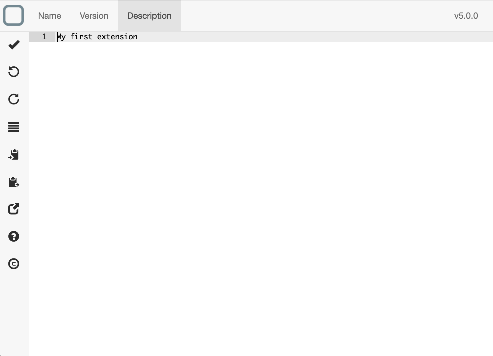
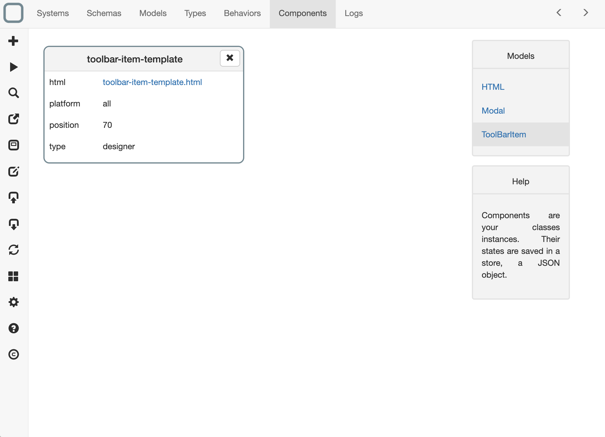
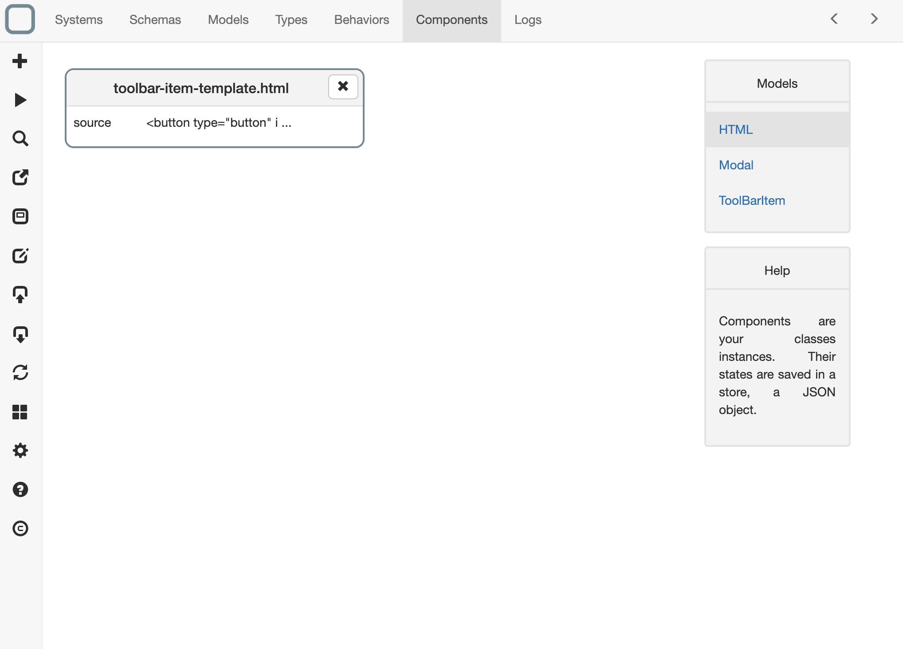
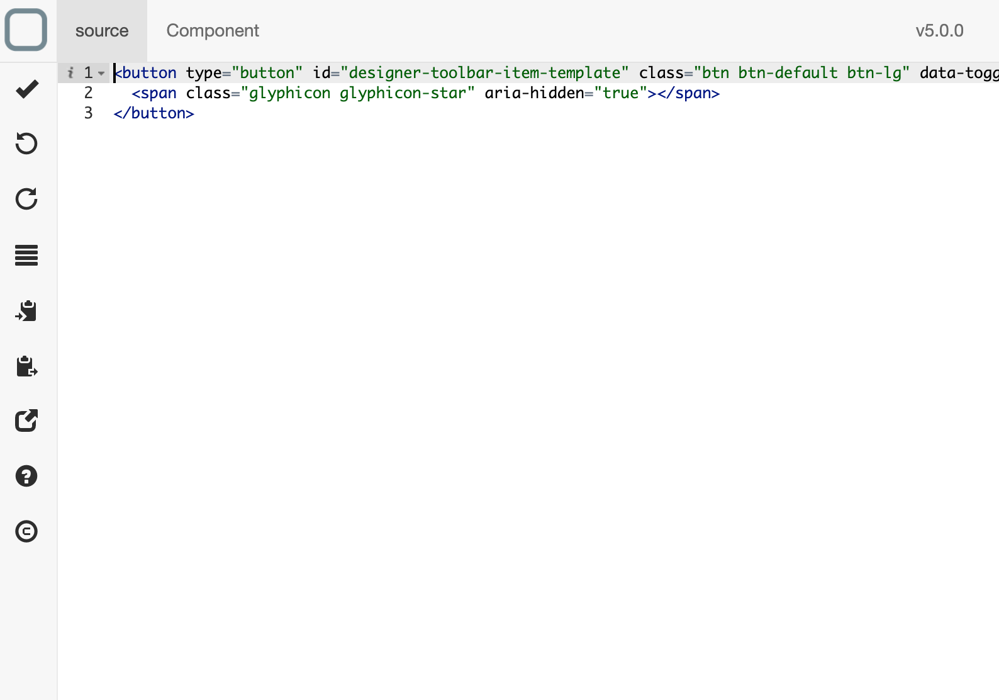
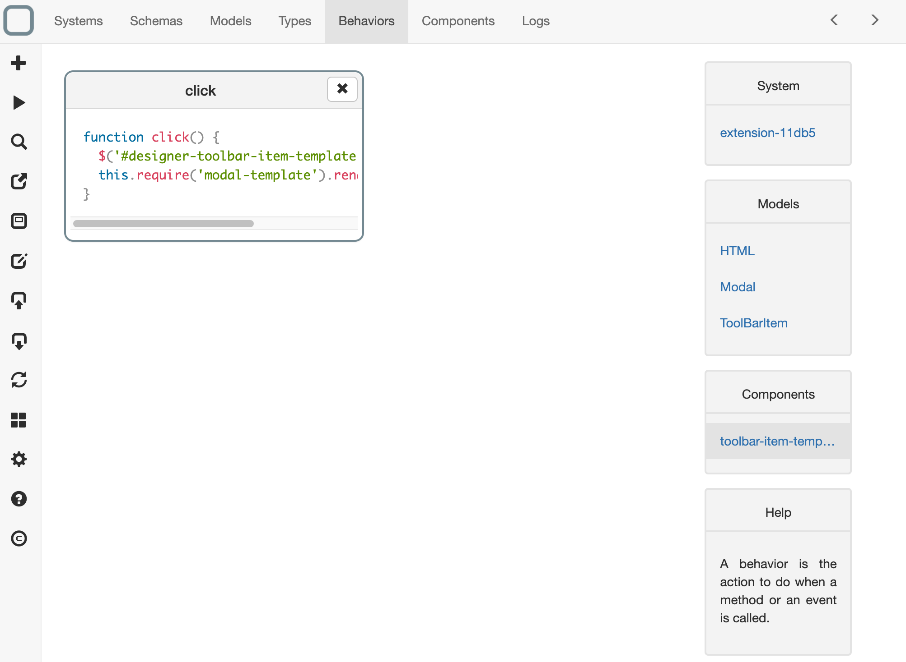
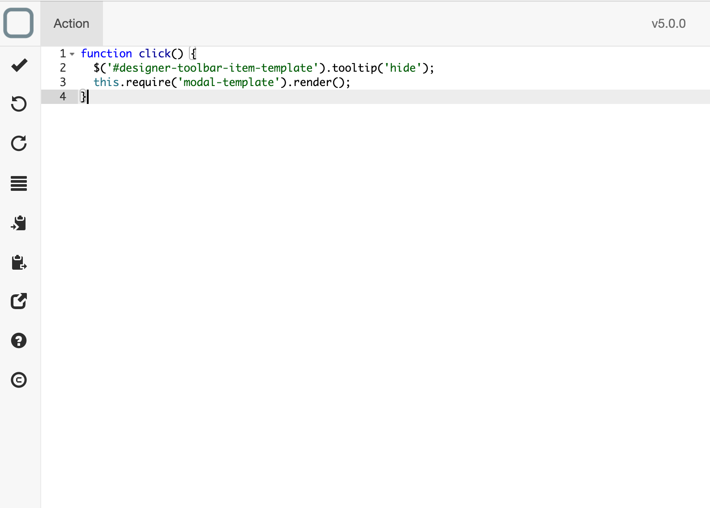
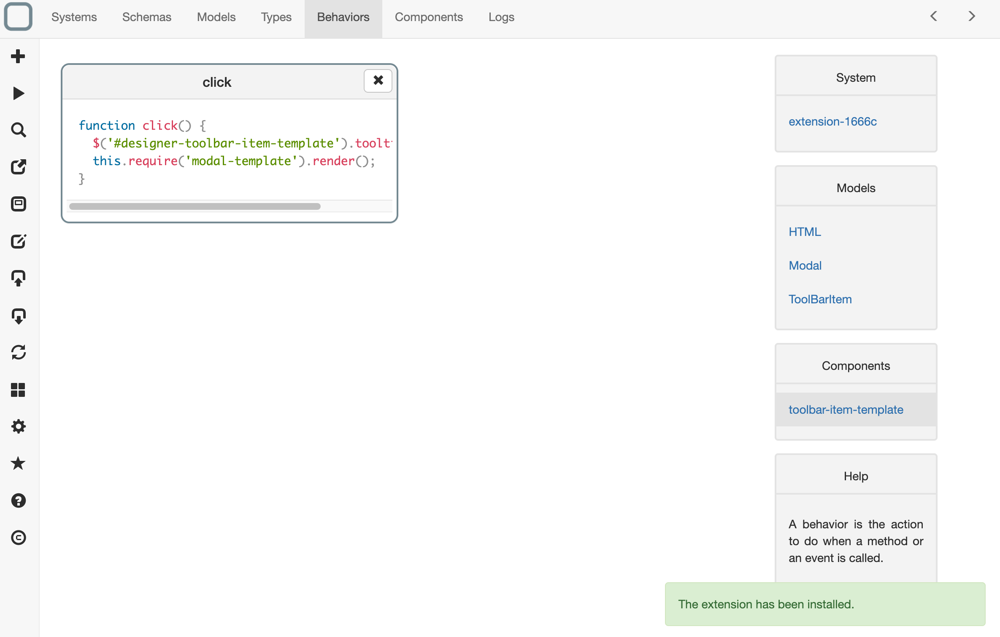
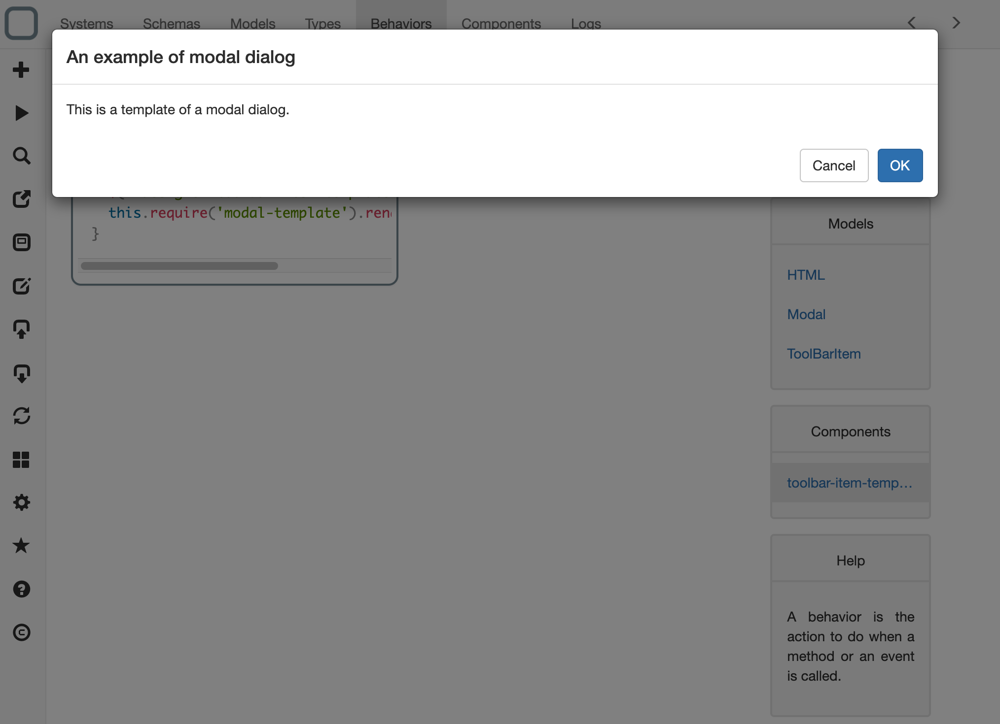
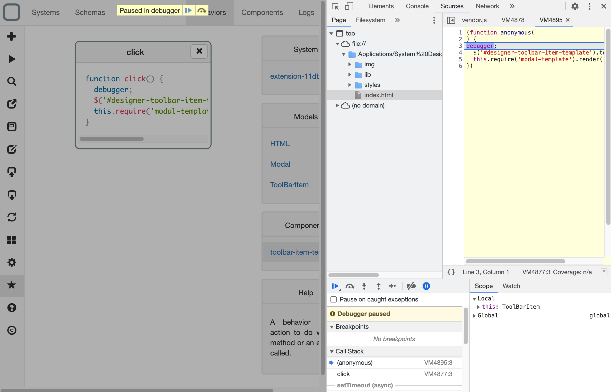
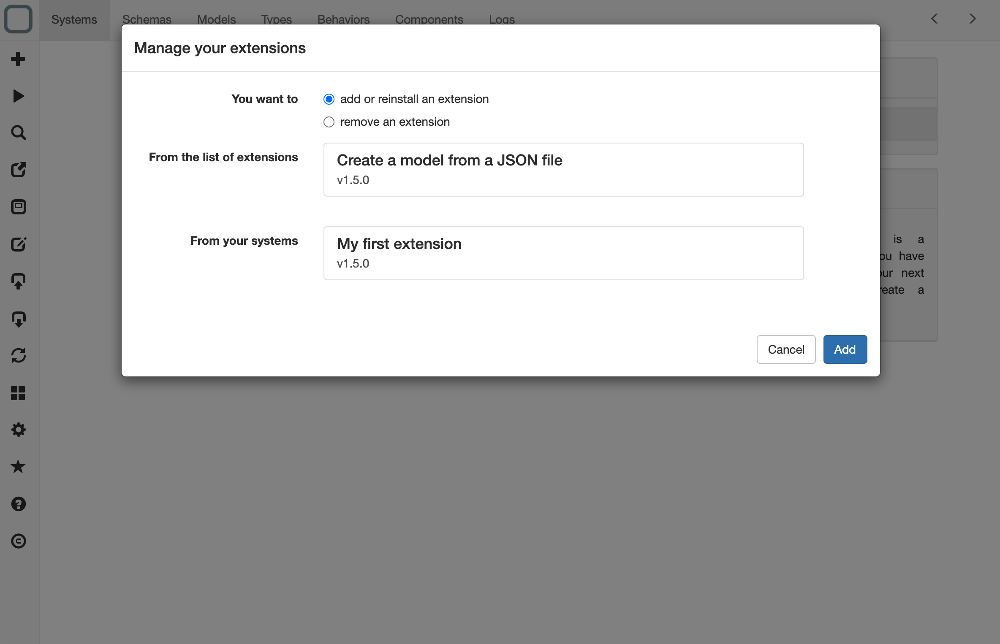

Create an extension
In this tutorial we will show how to create an extension in System Designer.
What can be done in extension?
- toolbar item creation,
- actions when clicking on them and
- dialog creations.
Create an extension
- click on the import button on the left toolbar,
- a dialog is shown,
- click on from the library radio button,
- select Create an extension from the proposed systems,

- click on the Import button. A system is created,
- click on the system,
- click on Description tab, remove all the text and type My first extension,

- save,
Create a toolbar item
- Click on Components tab and select ToolbarItem,

- A toolbar item is already there in the system example. Click on toolbar-item-template.html link (next to html property),
- You navigate to the HTML components and you can see the template used for showing the toolbar,

- Click on it if you wan edit the html of the toolbar item,

Create an action when clicking on the toolbar item
- click on Behaviors tab,
- click on ToolbarItem on the right,
- and then click toolbar-item-template on the right,

- a list of behaviors is shown, and you can see that a click behavior exist,
- click on it to edit it and update the code,

Test your extension
To test your extension, it is very easy. You just have to click on the run button and your extension will be installed in System Designer.

Then click on the new icon that is on the toolbar to see the dialog of your extension:

Debug your extension on macOS, Windows or Linux
- go to the menu,
- click on Menu > Toggle Developper Tools.
The Chrome Dev Tools is opened and you can debug your extension.

Add your extension
- click on the extension manager button on the left toolbar,
- a dialog is shown,
- near From your systems click on your extension,
- click on the Add button,

- your extension is then been added into System Designer. You will be able to remove it from the same dialog.